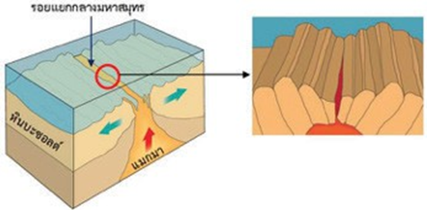
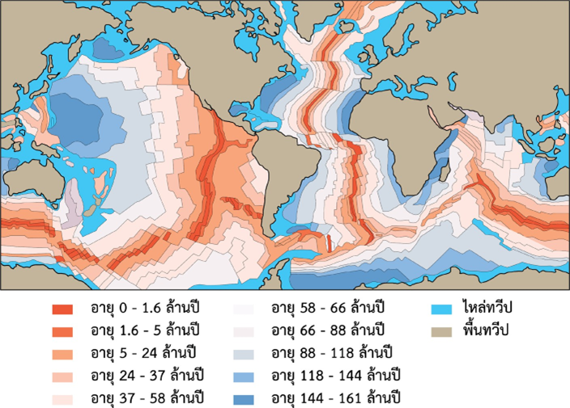
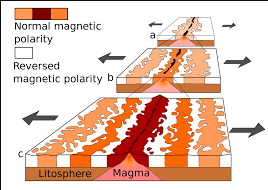

จุดประสงค์
1. อธิบายแนวคิด ทฤษฎีเกี่ยวกับการเคลื่อนที่ของแผ่นธรณี
2. อธิบายหลักฐานทางธรณีวิทยาที่สนับสนุนการเคลื่อนที่ของแผ่นธรณี
1. อธิบายแนวคิด ทฤษฎีเกี่ยวกับการเคลื่อนที่ของแผ่นธรณี
2. อธิบายหลักฐานทางธรณีวิทยาที่สนับสนุนการเคลื่อนที่ของแผ่นธรณี
ที่มาของทฤษฎีการแผ่ขยายพื้นสมุทร เกิดจากการค้นพบหลักฐานเกี่ยวกับอายุหิน ของพื้นมหาสมุทร โดยทฤษฎีการแผ่ขยายพื้นสมุทร ได้อธิบายถึงสาเหตุที่ทำให้พันเจียแตก และเคลื่อนที่แยกออกจากกัน ซึ่งเกิดจากการปะทุแทรกขึ้นมาของแมกมาบนเปลือกโลกทวีป ทำให้เปลือกโลกทวีปโป่งตัวขึ้น เกิดเป็นเทือกเขากลางมหาสมุทร จนแตกออกจากกัน แล้วเกิดการทรุดตัวเป็นหุบเขาทรุด ร่องที่เกิดจากการทรุดตัวเกิดเป็นทะเล และมหาสมุทร เปลือกโลกมหาสมุทรที่อยู่ใกล้แนวรอยแตกของเปลือกโลก จะมีลักษณะเป็นสันเขาใต้สมุทร การเพิ่มขึ้นของเปลือกโลกใต้มหาสมุทร เนื่องจากลาวาแข็งตัวเป็นหินอย่างต่อเนื่อง ทำให้เกิดแรงดึงดูด และดันเปลือกโลกมหาสมุทรที่เกิดขึ้นก่อน หรือมีอายุมากกว่า ให้เคลื่อนที่ออกห่างจากแนวรอยแตกมากขึ้น ส่งผลให้พื้นมหาสมุทร ที่อยู่ใกล้กับแนวรอยแตกของเปลือกโลกมีอายุน้อยกว่าพื้นสมุทรที่อยู่ไกลออกไป และการแข็งตัวเป็นหินของลาวาอย่างต่อเนื่อง ทำให้เกิดเปลือกโลกมหาสมุทรชุดใหม่อยู่ตลอดเวลา
หลักฐานที่สนับสนุนว่ามีการแผ่ขยายพื้นมหาสมุทร ได้แก่

1. เทือกเขากลางสมุทร เนื่องจากเกิดรอยแยกบริเวณมหาสมุทร กลายเป็นบริเวณที่เกิดการปะทุของภูเขาไฟ การแทรกดันของหินหนืดในบริเวณดังกล่าว จะดันให้แผ่นธรณีมหาสมุทรเคลื่อนที่ออกจากกัน จากส่วนกลางของเทือกเขากลางมหาสมุทร

2. อายุหินบริเวณพื้นมหาสมุทร จากการศึกษาหินบะซอลต์บริเวณหุบเขาทรุด หรือรอยแยกบริเวณเทือกเขากลางมหาสมุทร พบว่าหินบะซอลต์ที่อยู่ไกลจากรอยแยก จะมีอายุมากกว่าหินบะซอลต์ที่อยู่ใกล้รอยแยก เพราะเมื่อแผ่นธรณีเกิดรอยแยก แผ่นธรณีจะเคลื่อนที่ออกจากกันอย่างช้าๆ ตลอดเวลา ซึ่งเนื้อของหินบะซอลต์จากส่วนล่าง จะแทรกเสริมขึ้นมาตรงรอยแยกเป็นธรณีภาคใหม่ ทำให้บริเวณรอยแยกเกิดหินบะซอลต์ใหม่เรื่อยๆ ดังนั้น แผ่นธรณีบริเวณเทือกเขากลางมหาสมุทร จึงมีอายุน้อยที่สุด และแผ่นธรณีใกล้ขอบทวีป จะมีอายุมากกว่า

3. ภาวะแม่เหล็กโลกบรรพกาล คือร่องรอยสนามแม่เหล็กโลกในอดีต ศึกษาจากหินบะซอลต์ที่มีแร่แมกนีไทต์ (Fe3O4) เป็นองค์ประกอบ เพราะธาตุเหล็กที่อยู่ในแร่นี้ จะถูกเหนี่ยวนำโดยสนามแม่เหล็กโลก ทำให้มีการเรียงตัวในทิศทางเดียวกับเส้นแรงแม่เหล็กโลก
แฮร์รี่ แฮมมอนด์ เฮสส์ (Harry Hammond Hess)
เป็นนักธรณีวิทยาชาวอเมริกันและเป็นนายทหารของกองทัพเรือสหรัฐฯ ในสงครามโลกครั้งที่ 2 ซึ่งถือว่าเป็นหนึ่งใน "บรรพบุรุษผู้ก่อตั้ง" ของทฤษฎีการแปรสัณฐานของแผ่นเปลือกโลก เขาเป็นที่รู้จักกันเป็นอย่างดีจากทฤษฎีของเขาเกี่ยวกับการแพร่กระจายของพื้นทะเล
Licensed under the Creative Commons Attribution Share Alike License 4.0